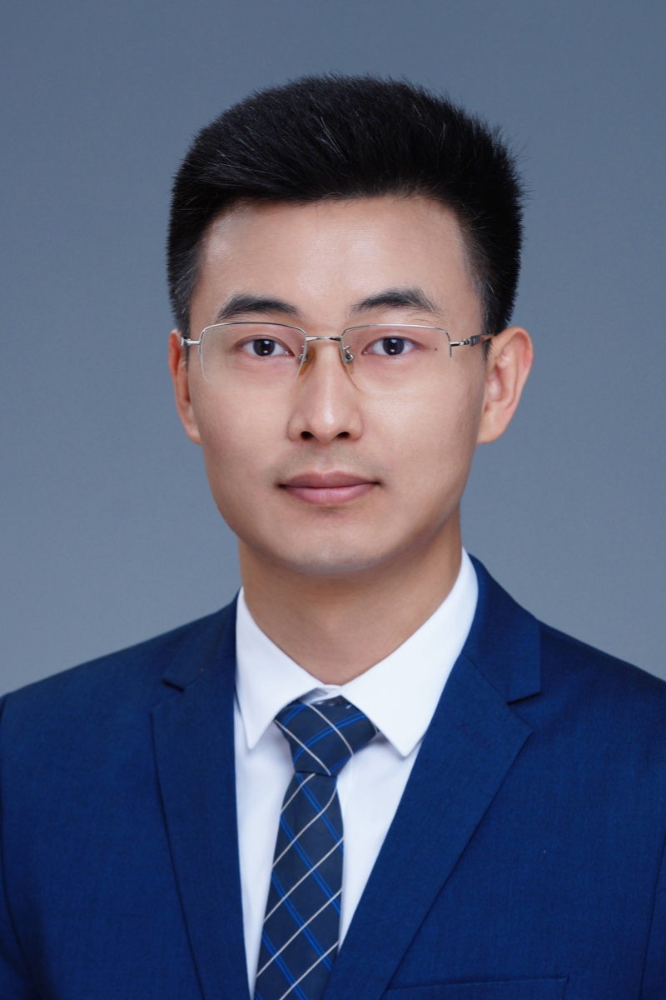
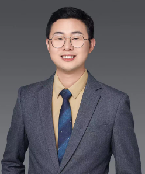
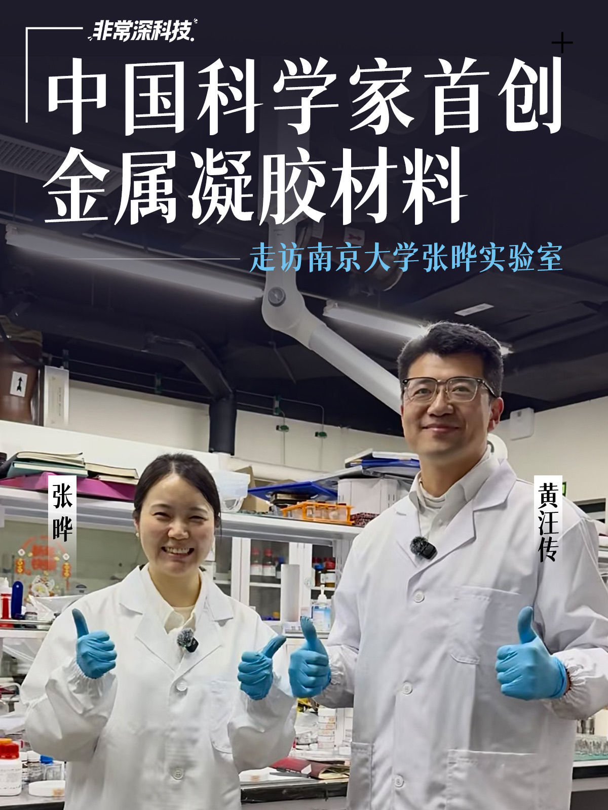

TR35 CHINA · 2018罗景山
南开大学教授、博导
研究人工光合作用、钙钛矿太阳能电池。企业视角：新能源材料、光伏器件、碳转化和绿色燃料的关键技术窗口。
来源：南开大学最新主页 →TR35 TALENT NETWORK
TR35 的意义不止于评选。对企业家而言，更重要的是理解一位青年科学家正在突破什么、适合什么样的产业问题，以及何时值得开始一场对话。

FEATURED PROFILES
这里展示的不是“可立即合作”的承诺，而是用于理解方向与判断匹配度的资料卡。科学家精准对接将在会员沟通后、基于双方意愿推进。

TR35 CHINA · 2018南开大学教授、博导
研究人工光合作用、钙钛矿太阳能电池。企业视角：新能源材料、光伏器件、碳转化和绿色燃料的关键技术窗口。
来源：南开大学最新主页 →苏州大学教授、博导
研究生物材料、肿瘤免疫治疗与递药系统。企业视角：如何让材料真正进入诊疗、给药和组织工程场景。
来源：苏州大学公开资料 →
TR35 CHINA · 2023南京大学副教授、博士生导师
研究柔性能源器件、可穿戴传感与生物电子。企业视角：如何让电池、材料与人体或设备的复杂使用环境真正匹配。
来源：南京大学公开资料 →北京大学物理学院研究员、助理教授
研究微纳磁电子与存算一体器件。企业视角：为存储、计算、智能硬件与能耗约束中的算力问题寻找新路线。
来源：北京大学公开资料 →DIRECTORY SNAPSHOT
以下为库内 TR35 历届入选者总表中、与企业技术转型高度相关的部分方向。完整信息以会员匹配与最新公开资料核验为准。
旷视科技创始人兼 CEO；人脸识别与前端智能硬件。
第四范式创始人兼 CEO；迁移学习、数据挖掘与企业 AI。
清华大学计算机科学与技术系副教授；自然语言处理与知识表示。
上海交通大学计算机系教授；计算机视觉与行为理解。
人工光合作用、氢能、太阳能与二氧化碳还原。
生物材料与肿瘤免疫治疗。
数字与信息技术、纳米磁体与存算一体化器件。
柔软聚合物电池、生物电子与可穿戴设备。
MATCH A SCIENTIST
请先描述企业在技术、产品或制造环节真正卡住的问题。好的对接始于问题足够具体，而不是一份泛化的“科学家名单”。
会员服务负责人：黄师傅
非常深科技视频主播 · 深科技学堂负责人 · DEEPTECH+ 企业家的科学社区负责人